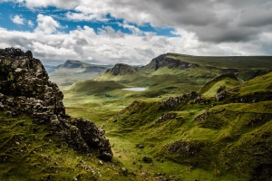
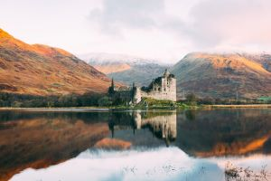

Beautiful Places Around the World
Scotland has many beautiful places that you can visit.
Images of Scotland
Isle of Skye

Snelders, B. (2019, March 5). Scotland - Isle of Skye. Unsplash. https://unsplash.com/photos/Cd3Ek7rNXSk
Kilchurn Castle

Mollison, C. (2020, May 14). Scotland - Kilchurn Castle. Unsplash. https://unsplash.com/photos/3rkosR_Dgfg
Visit this website about Scotland tailored for tourists